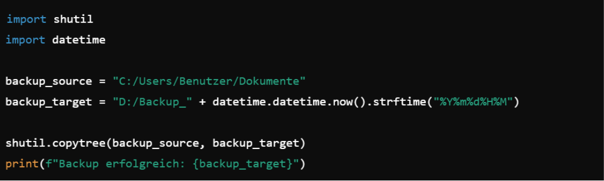

Hausaufgaben 10.02.2025
Aufgabe 1:
Was sind Backups ?
Backups sind Sicherrungskopien von Daten, um Datenverlust zu vermeiden.
Aufgabe 2:
Warum sollte man Backups machen?
- Datenverlust verhindern: Bei Systemausfällen können Daten schnell wiederhergestellt werden
- Betrieb sicherstellen: Unternehmen können bei Datenverlust schnell wieder arbeiten.
- Hardwarefehlern vorbeugen: Datenträger, Festplatten und andere Hardware können nach Defekten ausfallen.
- Löschungen rückgängig machen: Gelöschte oder beschädigte Dateien lassen sich mit einem Backup wiederherstellen.
- Updates rückgängig machen: Sollte nach einem Update das System nicht mehr funktionieren, dann kann man mithilfe eines Backups schnell zum vorherigen Zustand zurückkehren.
Aufgabe 3:
Was macht der gegebene Python-Code backup.py?

import shutil
import datetime
backup_source = "C:/Users/Benutzer/Dokumente"
backup_target = "D:/Backup_" + datetime.datetime.now().strftime("%Y%m%d%H%M")
shutil.copytree(backup_source, backup_target)
print(f"Backup erfolgreich: {backup_target}")
- Die Datenpakete "shutil" und "datetime" werden importiert.
- "backup_source" bezeichnet den Pfad des Quellverzeichnisses, das gesichert werden soll.
- "backup_target" bezeichnet den Zielpfad für das Backup. Dabei werden Datum und die aktuelle Uhrzeit an die Datei angehängt.
- "shutil.copytree" kopiert "backup_source" in das "backup_target", also das Quellverzeichis wird in das Zielverzeichnis kopiert.
- Gibt eine Erfolgsmeldun aus und gibt den Pfad des Zielpfads an.
Aufgabe 4:
Gibt es einen Weg, um ein Script automatisch ausführen zu lassen und dies direkt für ein Backup zu nutzen?
Ja, denn es gibt die Möglichkeit, in der Aufgabenplanung, dem Task Schedule, auf ein Script als Handlung zu verweisen.
So lässt sich zu einer bestimmten Zeit ein automatisches Backup machen.
Dadurch wird ein Backup ausgeführt, ohne dass der Nutzer eingreifen muss.